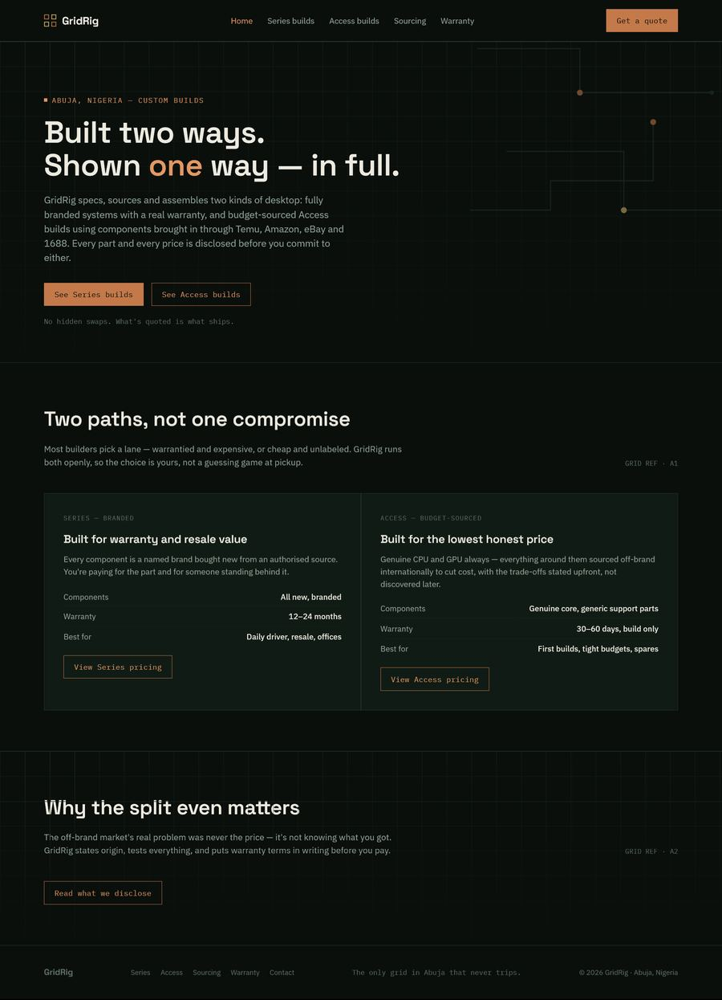
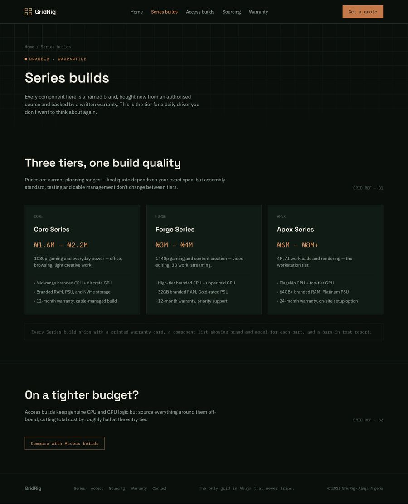
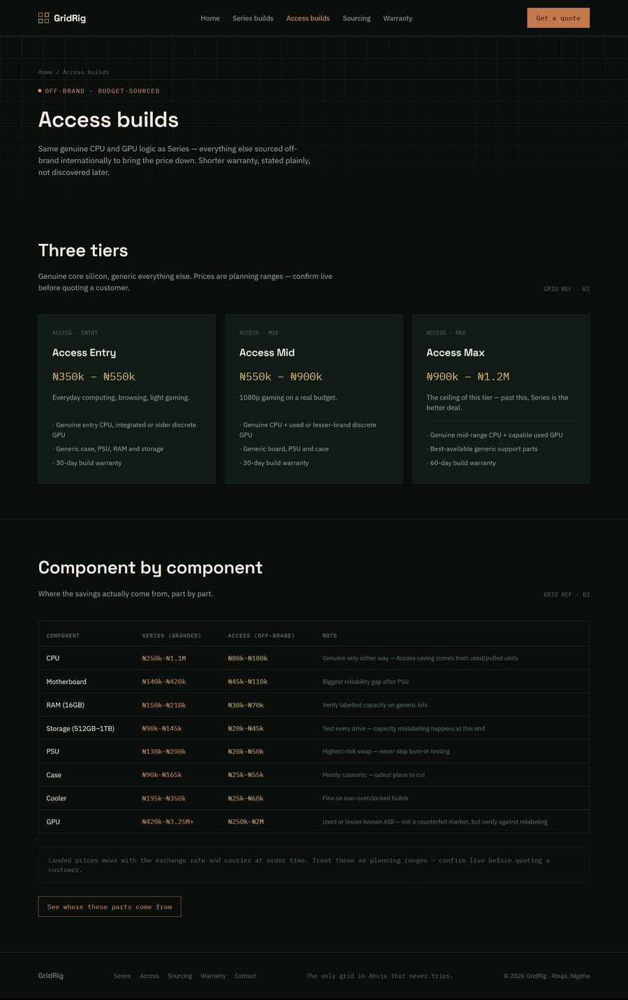
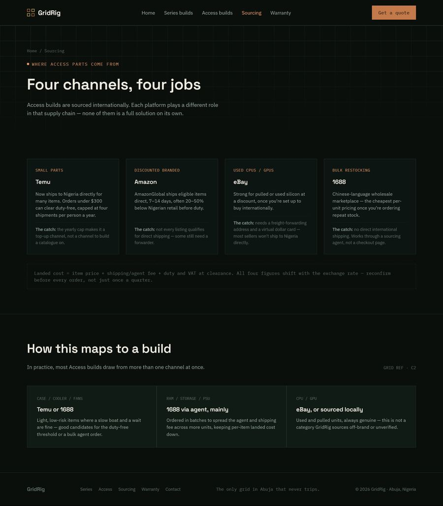
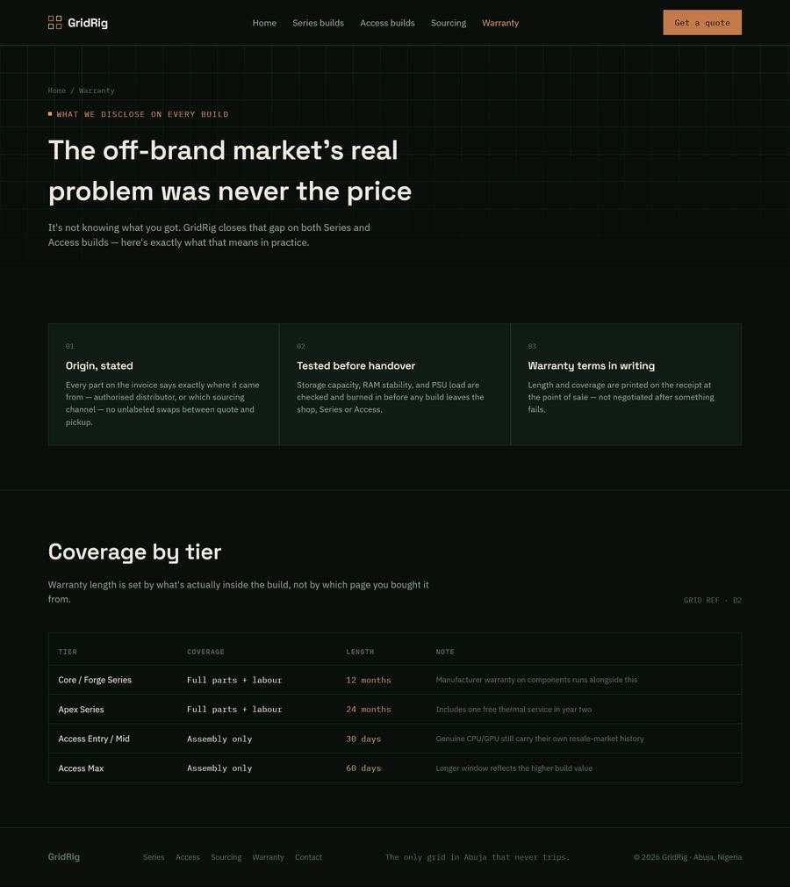

GridRig
Website for a custom PC-building business in Abuja, Nigeria.
The challenge
Most PC builders pick a lane: warrantied and expensive, or cheap and unlabelled. GridRig sells both openly, so the site has to make the difference obvious before anyone asks for a quote.
Two paths, side by side
The home page compares Series (branded, with a longer warranty) and Access (budget-sourced, shorter warranty) on components, warranty and who each is best for.
Prices without surprises
Each tier shows a planning range, and Access builds get a component-by-component table showing where the savings come from.
Trust pages
Sourcing explains where parts come from and the catch with each channel. Warranty lays out coverage by tier, in writing.
The pages




